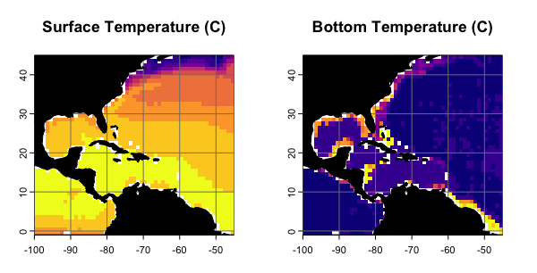
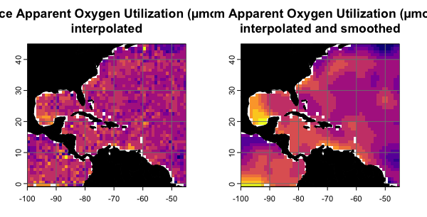

2. Processing Raster Data
Hannah L. Owens
Carsten Rahbek
2022-06-27
Source:vignettes/b_RasterProcessing.Rmd
b_RasterProcessing.RmdIntroduction
Naturally, to build 3D distribution models, one needs three-dimensionally structured environmental data. These data may come in the form of interpolated in situ measurements (e.g. NOAA’s World Ocean Atlas dataset; Garcia et al. 2018a) or as outputs from climate models, either as stand-alone ocean components or as a component of coupled atmosphere-ocean models (e.g. CCSM3, Collins et al. 2006; HadCM3, Valdes et al. 2017). Typically, these data are organized as a series of horizontal layers that are stacked by depth.
library(voluModel) # Since this is the package this vignette is about.
library(rgdal, options("rgdal_show_exportToProj4_warnings"="none")) # For vector stuff. Will eventually be replaced with sf.
library(raster) # For raster stuff. Will eventually be replaced with terra.
library(tibble) # For data organization
library(ggplot2) # For supplementary visualization
library(fields) # For raster interpolation
library(latticeExtra) # Some fancy plottingData Inputs
First, let’s look at a relatively simple environmental variable from the WOA: temperature (Locarnini et al, 2018). These data are supplied by the World Ocean Atlas as point shapefiles; the version supplied here has been cropped between -110 and -40 longitude and between -5 and 50 latitude to make it more memory-efficient. You can download the full dataset via the WOA website. Our first task is to read in the shapefile as a SpatialPointsDataFrame. Note that each row in temperature@data is a set of horizontal coordinates. Each column is a vertical position in the water column. Make sure to check the metadata of the data you use. Different sources may use vertical depth structures.
td <- tempdir()
unzip(system.file("extdata/woa18_decav_t00mn01_cropped.zip",
package = "voluModel"),
exdir = paste0(td, "/temperature"), junkpaths = T)
temperature <- readOGR(dsn = paste0(td, "/temperature"),
layer ="woa18_decav_t00mn01_cropped")## OGR data source with driver: ESRI Shapefile
## Source: "/tmp/RtmpnIKQYD/temperature", layer: "woa18_decav_t00mn01_cropped"
## with 1633 features
## It has 102 fields
unlink(paste0(td, "/temperature"), recursive = T)
# Specifying "no data" value
temperature@data[temperature@data == -999.999] <- NA
# Looking at the dataset
head(temperature@data)## SURFACE d5M d10M d15M d20M d25M d30M d35M d40M d45M d50M
## 1 23.514 23.266 22.969 22.373 21.832 21.320 20.839 20.309 19.780 19.264 18.715
## 2 23.542 23.222 22.915 22.430 21.938 21.343 20.747 20.182 19.584 18.984 18.394
## 3 23.575 23.392 22.919 22.318 21.766 21.117 20.531 19.860 19.266 18.673 18.161
## 4 23.204 22.979 22.559 22.057 21.401 20.651 19.978 19.433 18.835 18.247 17.691
## 5 23.451 23.125 22.726 22.134 21.520 20.828 20.128 19.472 18.875 18.353 17.875
## 6 23.261 22.968 22.559 22.052 21.528 20.945 20.337 19.759 19.198 18.669 18.162
## d55M d60M d65M d70M d75M d80M d85M d90M d95M d100M d125M
## 1 18.164 17.671 17.179 16.743 16.284 15.861 15.622 15.217 14.949 14.767 14.020
## 2 17.843 17.343 16.906 16.497 16.113 15.800 15.488 15.187 14.927 14.720 13.958
## 3 17.675 17.174 16.689 16.236 15.919 15.619 15.391 15.165 14.931 14.699 13.993
## 4 17.177 16.744 16.395 16.074 15.633 15.361 15.172 14.891 14.735 14.556 13.907
## 5 17.425 16.966 16.536 16.184 15.881 15.588 15.335 15.110 14.875 14.686 14.084
## 6 17.727 17.306 16.856 16.491 16.135 15.794 15.530 15.219 15.031 14.822 14.159
## d150M d175M d200M d225M d250M d275M d300M d325M d350M d375M d400M
## 1 13.552 13.277 13.096 12.912 12.678 12.306 11.736 11.055 10.482 9.987 9.504
## 2 13.598 13.302 13.106 12.928 12.667 12.272 11.675 11.060 10.469 9.908 9.476
## 3 13.574 13.328 13.123 12.928 12.693 12.278 11.729 11.155 10.538 9.984 9.504
## 4 13.528 13.305 13.117 12.926 12.655 12.275 11.745 11.064 10.454 9.927 9.559
## 5 13.720 13.465 13.216 13.032 12.682 12.247 11.732 11.089 10.423 9.892 9.668
## 6 13.757 13.515 13.299 13.123 12.759 12.287 11.760 11.087 10.540 10.019 9.684
## d425M d450M d475M d500M d550M d600M d650M d700M d750M d800M d850M d900M d950M
## 1 9.061 8.696 8.413 8.119 7.570 7.117 6.676 6.241 5.894 5.618 5.313 5.062 4.828
## 2 9.071 8.712 8.431 8.134 7.621 7.136 6.644 6.255 5.891 5.574 5.262 4.994 4.787
## 3 9.093 8.765 8.442 8.101 7.620 7.180 6.687 6.267 5.875 5.566 5.293 5.052 4.811
## 4 9.118 8.732 8.421 8.182 7.663 7.176 6.712 6.270 5.912 5.598 5.330 5.094 4.844
## 5 9.063 8.720 8.404 8.156 7.593 7.114 6.662 6.249 5.869 5.553 5.301 5.038 4.781
## 6 9.142 8.805 8.477 8.217 7.654 7.170 6.760 6.335 5.927 5.590 5.327 5.088 4.847
## d1000M d1050M d1100M d1150M d1200M d1250M d1300M d1350M d1400M d1450M d1500M
## 1 4.618 4.410 4.223 4.054 3.868 3.727 3.563 3.410 3.278 3.144 3.050
## 2 4.562 4.379 4.207 4.048 3.876 3.731 3.560 3.428 3.297 3.167 3.040
## 3 4.571 4.397 4.218 4.048 3.896 3.737 3.592 3.440 3.286 3.149 3.044
## 4 4.614 4.415 4.219 4.048 3.899 3.743 3.581 3.426 3.279 3.153 3.049
## 5 4.587 4.395 4.233 4.062 3.911 3.727 3.555 3.404 3.279 3.150 3.045
## 6 4.617 4.441 4.243 4.060 3.905 3.747 3.573 3.424 3.294 3.172 3.050
## d1550M d1600M d1650M d1700M d1750M d1800M d1850M d1900M d1950M d2000M d2100M
## 1 2.949 2.858 2.769 2.692 2.618 2.540 2.470 2.406 2.329 2.320 2.227
## 2 2.950 2.856 2.765 2.686 2.606 2.527 2.455 2.376 2.308 NA NA
## 3 2.946 2.860 2.759 2.682 2.605 2.531 2.456 2.392 2.326 2.351 2.193
## 4 2.938 2.843 2.754 2.675 2.602 2.528 2.463 2.398 2.335 2.223 2.130
## 5 2.936 2.845 2.760 2.666 2.579 2.513 2.453 2.395 2.340 2.254 2.165
## 6 2.946 2.845 2.758 2.679 2.600 2.526 2.459 2.397 2.338 2.276 2.165
## d2200M d2300M d2400M d2500M d2600M d2700M d2800M d2900M d3000M d3100M d3200M
## 1 2.147 2.075 2.012 1.960 1.908 1.864 1.826 1.794 1.770 NA NA
## 2 NA NA NA NA NA NA NA NA NA NA NA
## 3 2.081 1.993 1.921 1.862 1.813 1.777 1.753 1.754 1.755 NA NA
## 4 2.046 1.962 1.891 1.834 1.789 1.795 1.745 NA NA NA NA
## 5 2.047 1.985 1.921 1.870 1.812 1.769 1.746 1.743 1.753 1.766 NA
## 6 2.076 2.003 1.936 1.886 1.843 1.796 1.761 1.751 1.753 1.759 1.78
## d3300M d3400M d3500M d3600M d3700M d3800M d3900M d4000M d4100M d4200M d4300M
## 1 NA NA NA NA NA NA NA NA NA NA NA
## 2 NA NA NA NA NA NA NA NA NA NA NA
## 3 NA NA NA NA NA NA NA NA NA NA NA
## 4 NA NA NA NA NA NA NA NA NA NA NA
## 5 NA NA NA NA NA NA NA NA NA NA NA
## 6 NA NA NA NA NA NA NA NA NA NA NA
## d4400M d4500M d4600M d4700M d4800M d4900M d5000M d5100M d5200M d5300M d5400M
## 1 NA NA NA NA NA NA NA NA NA NA NA
## 2 NA NA NA NA NA NA NA NA NA NA NA
## 3 NA NA NA NA NA NA NA NA NA NA NA
## 4 NA NA NA NA NA NA NA NA NA NA NA
## 5 NA NA NA NA NA NA NA NA NA NA NA
## 6 NA NA NA NA NA NA NA NA NA NA NA
## d5500M
## 1 NA
## 2 NA
## 3 NA
## 4 NA
## 5 NA
## 6 NA
# Plotting the dataset
layout(matrix(c(1, 2), ncol=2, byrow=TRUE), widths=c(4, 1))
land <- rnaturalearth::ne_countries(scale = "small",
returnclass = "sf")[1]
ext <- extent(temperature@coords)
plot(temperature, main = "Distribution of voluModel Subset\nof WOA Temperature 2018",
pch = 20, col = "red", xlim = ext[1:2], ylim = ext[3:4], cex = .6)
plot(land, col = "black", add = T)
# What does the WOA depth structure look like?
depths <- colnames(temperature@data)
depths <- as.numeric(gsub(depths[-1], pattern = "[d,M]", replacement = ""))
plot(0, xlim = c(0,1), ylim = c(0-max(depths), 0), axes=FALSE, type = "n", xlab = "", ylab = "Depth Intervals (m)")
axis(2, at = 0-depths, labels = depths)
Next, we convert temperature into a RasterBrick. While we are at it, we will generate a raster from the deepest value available for each point. While you might call this a “bottom” raster, it is important to note that in some cases, values are not available for the bottom. After the RasterBrick is created, we give it the same depth names as the columns in the SpatialPointsDataFrame. This is important, because voluModel uses these names as z coordinates when handling 3D data. I am using oneRasterPlot() from voluModel to visualize the rasters using a uniform, high-contrast asthetic.
#Creating a bottom raster from the point shapefile
temperatureBottom <- bottomRaster(temperature)
# Creating a 3D temperature RasterBrick from the point shapefile
temperature <- rasterFromXYZ(cbind(temperature@coords,
temperature@data))
# Get names of depths
envtNames <- gsub("[d,M]", "", names(temperature))
envtNames[[1]] <- "0"
names(temperature) <- envtNames
# How do these files look?
p1 <- oneRasterPlot(temperature[[1]], land = land, landCol = "black",
title= "Temperature (C)")
p2 <- oneRasterPlot(temperatureBottom,land = land, landCol = "black",
title = "Temperature (C)")
temp <- c("Surface" = p1, "Bottom" = p2)
update(temp, strip = strip.custom(strip.levels = TRUE,
horizontal = TRUE,
bg = "black",
fg = "white",
par.strip.text = list(col = "white", cex = 1.2, font = 2)))
Interpolation
Next, we have a bit of a more complicated example: apparent oxygen utilization (AOU; Garcia et al, 2018b). Apparent oxygen usage is more patchily sampled than temperature (it’s generally measured from instrument casts on research cruises, and the coverage isn’t quite as dense as for temperature).
td <- tempdir()
unzip(system.file("extdata/woa18_all_A00mn01_cropped.zip",
package = "voluModel"),
exdir = paste0(td, "/oxygen"), junkpaths = T)
# do something with the files
oxygen <- readOGR(dsn = paste0(td, "/oxygen"),
layer = "woa18_all_A00mn01_cropped")## OGR data source with driver: ESRI Shapefile
## Source: "/tmp/RtmpnIKQYD/oxygen", layer: "woa18_all_A00mn01_cropped"
## with 1490 features
## It has 102 fields
unlink(paste0(td, "/oxygen"), recursive = T)
oxygen@data[oxygen@data == -999.999] <- NA
plot(oxygen, main = "Distribution of voluModel subset of WOA AOU 2018",
pch = 20, col = "red", xlim = ext[1:2], ylim = ext[3:4], cex = .6)
plot(land, col = "black", add = T)
There is a workaround for this, since we can reasonably expect some degree of spatial autocorrelation in apparent oxygen utilization. We use the interpolateRaster() function to produce statistically-interpolated layers using TPS() from the fields package (this is a thin-plate spline interpolation). Be patient–this step can take a while, although as shown here, I am using the fastTPS() approximation, which only samples from nearby cells to speed things up. Maybe fastTPS() will work ok for your data, maybe it won’t. It depends on the data.
# Creating a RasterBrick
oxygen <- rasterFromXYZ(cbind(oxygen@coords, oxygen@data))
for (i in 1:nlayers(oxygen)){
oxygen[[i]] <- interpolateRaster(oxygen[[i]], lon.lat = T, fast = T, aRange = 5) #Thin plate spline interpolation
oxygen[[i]] <- crop(mask(x = oxygen[[i]], mask = temperature[[i]]), temperature[[i]])
}
# Change names to match temperature
names(oxygen) <- envtNamesSome environmental data rasters may also look “patchy”, possibly as an artifact of uneven sampling. If you are confident that there should be a strong spatial correlation in a data layer that looks “patchy”, you can also statistically smooth it, again using TPS(), like this:
oxygenSmooth <- oxygen
for (i in 1:nlayers(oxygen)){
oxygenSmooth[[i]] <- smoothRaster(oxygenSmooth[[i]], lon.lat = T) #Thin plate spline interpolation
oxygenSmooth[[i]] <- crop(mask(x = oxygenSmooth[[i]], mask = temperature[[i]]), temperature[[i]])
}
# Change names to match temperature
names(oxygenSmooth) <- names(temperature)
p1 <- oneRasterPlot(oxygen[[1]], land = land, landCol = "black",
title= "Apparent Oxygen Utilization (µmol/kg) at Surface")
p2 <- oneRasterPlot(oxygenSmooth[[1]], land = land, landCol = "black",
title= "Apparent Oxygen Utilization (µmol/kg) at Surface")
temp <- c("Interpolated" = p1, "Interpolated and Smoothed" = p2)
update(temp, strip = strip.custom(strip.levels = TRUE,
horizontal = TRUE,
bg = "black",
fg = "white",
par.strip.text = list(col = "white", cex = 1.2, font = 2)))
References
Collins WD, Bitz CM, Blackmon ML, Bonan GB, Bretherton CS, Carton JA, Chang P, Doney SC, Hack JJ, Henderson TB, Kiehl JT, Large WG, McKenna DS, Santer BD, Smith RD. (2006) The Community Climate System Model Version 3 (CCSM3) Journal of Climate, 19(11), 2122–2143 DOI: 10.1175/jcli3761.1
Garcia HE, Boyer P, Baranova OK, Locarnini RA, Mishonov AV, Grodsky A, Paver CR, Weathers KW, Smolyar IV, Reagan JR, Seidov D, Zweng MM. (2018a). World Ocean Atlas 2018 (A. Mishonov, Ed.). NOAA National Centers for Environmental Information. https://accession.nodc.noaa.gov/NCEI-WOA18
Garcia HE, Weathers K, Paver CR, Smolyar I, Boyer TP, Locarnini RA, Zweng MM, Mishonov AV, Baranova OK, Seidov D, Reagan JR (2018b). World Ocean Atlas 2018, Volume 3: Dissolved Oxygen, Apparent Oxygen Utilization, and Oxygen Saturation. A Mishonov Technical Ed.; NOAA Atlas NESDIS 83, 38pp.
Locarnini RA, Mishonov AV, Baranova OK, Boyer TP, Zweng MM, Garcia HE, Reagan JR, Seidov D, Weathers K, Paver CR, Smolyar I (2018). World Ocean Atlas 2018, Volume 1: Temperature. A. Mishonov Technical Ed.; NOAA Atlas NESDIS 81, 52pp.
Nychka D, Furrer R, Paige J, Sain S (2021). “fields: Tools for spatial data.” R package version 13.3, <URL: https://github.com/dnychka/fieldsRPackage>.
R Core Team (2017). R: A language and environment for statistical computing. R Foundation for Statistical Computing, Vienna, Austria. URL https://www.R-project.org/.
Valdes PJ, Armstrong E, Badger MPS, Bradshaw CD, Bragg F, Crucifix M, Davies-Barnard T, Day JJ, Farnsworth A, Gordon C, Hopcroft PO, Kennedy AT, Lord NS, Lunt DJ, Marzocchi A, Parry LM, Pope V, Roberts WHG, Stone EJ, … Williams JHT. (2017). The BRIDGE HadCM3 family of climate models: HadCM3@Bristol v1.0. Geoscientific Model Development, 10(10), 3715–3743. DOI: 10.5194/gmd-10-3715-2017